MODA URBANA CON HISTORIA
La moda urbana no solo se trata de estilo, sino también de transformación. En un mundo donde la ropa tiene una segunda oportunidad, el denim se convierte en el lienzo perfecto para reinventar prendas únicas y con carácter.
La moda urbana no solo se trata de estilo, sino también de transformación. En un mundo donde la ropa tiene una segunda oportunidad, el denim se convierte en el lienzo perfecto para reinventar prendas únicas y con carácter.
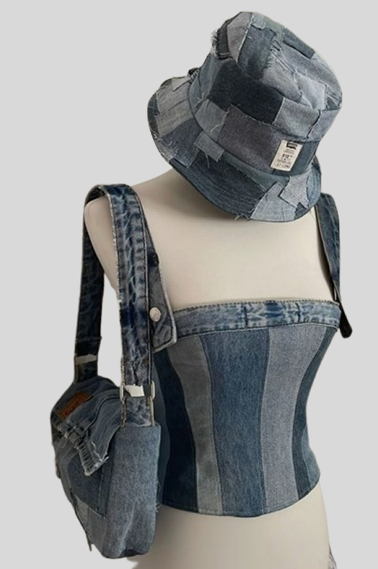
El look que ves en la imagen es un claro ejemplo de cómo la creatividad y la sostenibilidad pueden fusionarse en una prenda de impacto. Este conjunto, elaborado a partir de piezas de mezclilla reciclada, demuestra que la moda puede ser disruptiva sin perder su esencia urbana. Cada pieza —el bucket hat, el corset y el bolso— cuenta una historia. Los retazos de diferentes tonos de mezclilla reflejan el paso del tiempo y le dan un aire vintage y rebelde, perfecto para quienes buscan destacar con un estilo auténtico.
Este tipo de diseños no solo son una tendencia, sino un movimiento. En lugar de producir en masa, el enfoque se centra en la reutilización de materiales, creando piezas exclusivas y con una personalidad única.
💥 Reduce el impacto ambiental
💥 Da una nueva vida a prendas olvidadas necesito solo 2 texto
💥 Ofrece un estilo exclusivo e irrepetible.
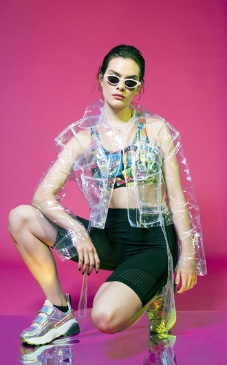
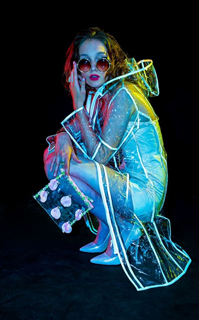
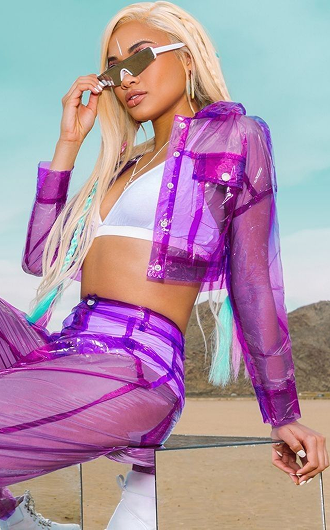
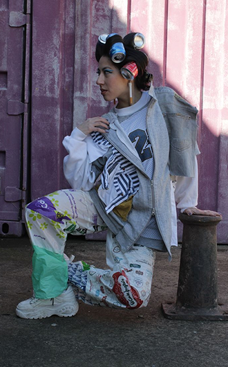
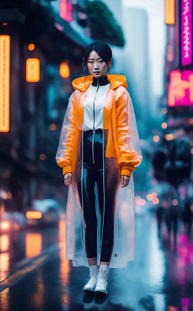
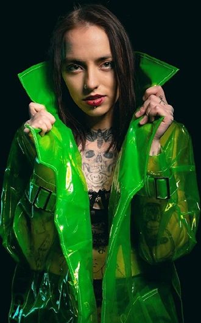
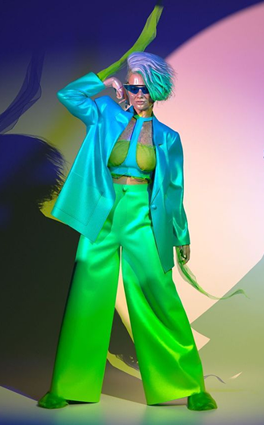
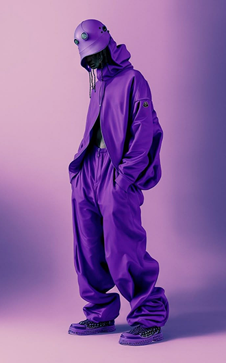
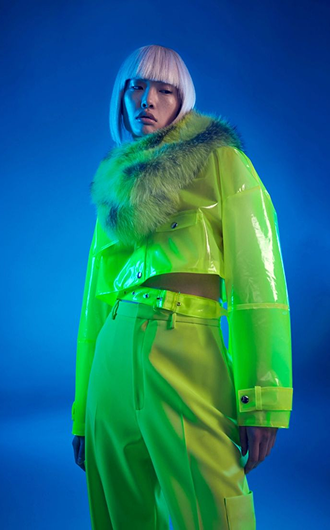
La moda urbana siempre ha sido sinónimo de creatividad y reinvención. Este diseño de falda asimétrica y corset con estrellas demuestra que la mezclilla puede transformarse en una pieza única y atrevida.
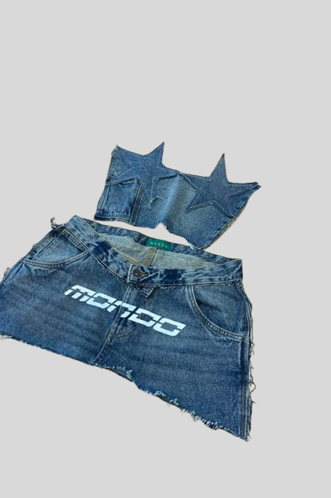
Este conjunto reinterpreta el clásico denim con cortes agresivos, detalles asimétricos y texturas en contraste. La falda, creada a partir de un pantalón reciclado, juega con el equilibrio entre lo rudo y lo chic, mientras que el corset con picos y estrellas añade una estética futurista y rebelde. Cada costura y cada corte imperfecto cuentan una historia. La mezcla de denim en diferentes lavados y el logotipo impreso en la falda refuerzan un aire streetwear auténtico, ideal para quienes buscan un look con personalidad.
Comentarios